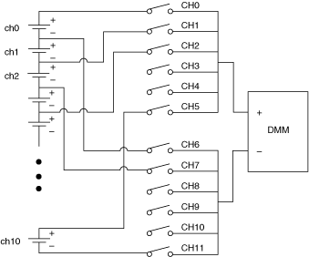
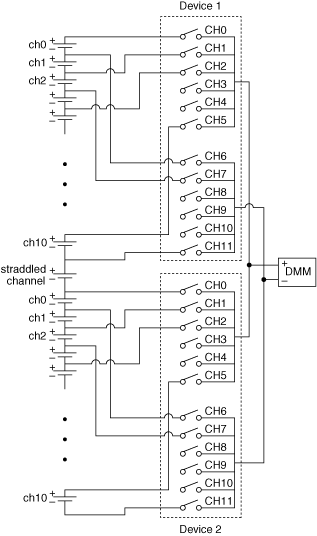

You can use the NI PXI-2584 independent topology to create a 2-wire 11×1 multiplexer. The independent topology interleaves the two multiplexer banks of the NI PXI-2584 to create one interleaved multiplexer. Interleaved multiplexing is useful for measuring stacked signals such as battery stacks where each channel shares a connection with the channels before and after it. By sharing connections you can nearly double the channel count while still maintaining 2-wire (differential) measurements.
A representation of an interleaved multiplexer is shown in the following figure. The channels of the interleaved multiplexer are shown on the left of the figure.

|
Note Signals connected to odd channels are measured in reverse polarity. |
|
Note In multiple module operations, a straddled channel—an additional channel composed of the last channel of the first device (ch11) and the first channel of the second device (ch0)—is created between the two devices. |
Use the Independent topology for both scanning and immediate operation of the NI PXI-2584 when using it as a 2-wire 11×1 interleaved multiplexer.
In single module scanning, to measure signals as shown in the preceding figure, complete the following steps:
Refer to the following example for scan list syntax.
/Dev1/ch0->com0 & ch6->com1; ~ch0->com0 && ch1->com0; ~ch6->com1 && ch7->com1;...~ch10->com1 && ch11->com1; ~ch5->com0 & ~ch11->com1 &&
|
Note When calling the niSwitch Configure Scan List VI or the niSwitch_ConfigureScanList function, select No Action for the scan mode parameter. |
Refer to the NI-SWITCH or the NI-DAQmx programming example for more information about single module scanning with the NI PXI-2584.
In multiple module scanning, to measure signals on multiple devices, including the straddled channel signal, as shown in the following figure, complete the following steps:

Refer to the following example for scan list syntax.
/Dev1/ch0->com0 & ch6->com1; ~ch0->com0 && ch1->com0;...~ch5->com0 && /Dev2/ch0->com0; /Dev1/~ch11->com1 && /Dev2/ch6->com1; ~ch0->com0 && ch1->com0;...~ch10->com1 && ch11->com1; ~ch5->com0 & ~ch11->com1 &&
|
Note When calling the niSwitch Configure Scan List VI or the niSwitch_ConfigureScanList function, select No Action for the scan mode parameter. |
Multiple module scanning with the NI PXI-2584 is supported only in NI-DAQmx. Refer to the NI-DAQmx programming example for more information about multiple module scanning with the NI PXI-2584.
The following figure and table identify the pins for the NI PXI-2584 when used as a 2-wire 11×1 interleaved multiplexer.

| Interleaved Channel | Pin Name | |
|---|---|---|
| + | – | |
| ch0 | CH0 | CH6 |
| ch1 | CH6 | CH1 |
| ch2 | CH1 | CH7 |
| ch3 | CH7 | CH2 |
| ch4 | CH2 | CH8 |
| ch5 | CH8 | CH3 |
| ch6 | CH3 | CH9 |
| ch7 | CH9 | CH4 |
| ch8 | CH4 | CH10 |
| ch9 | CH10 | CH5 |
| ch10 | CH5 | CH11 |